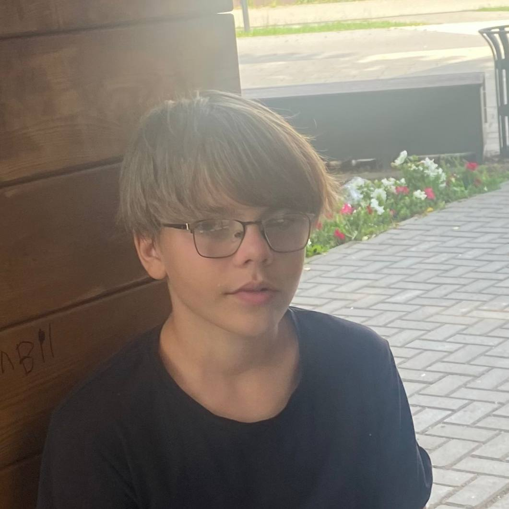
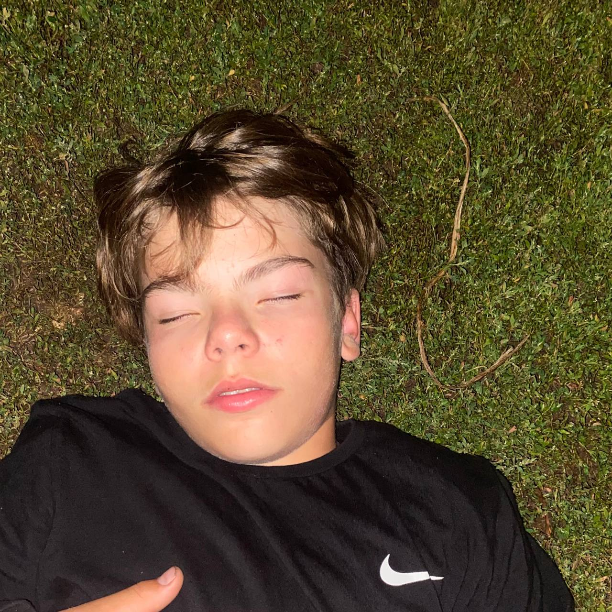
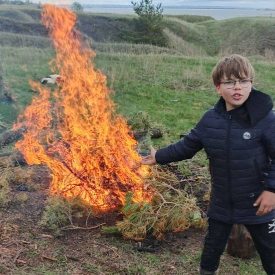
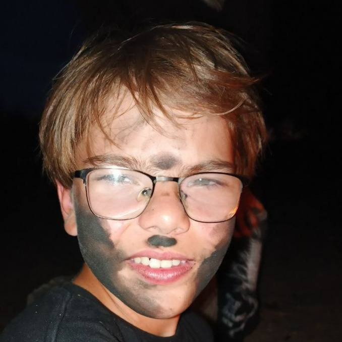
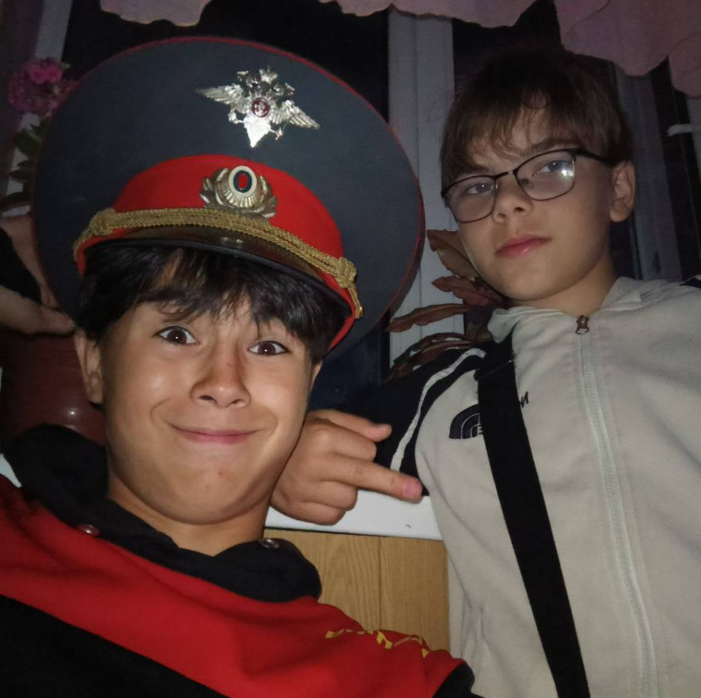
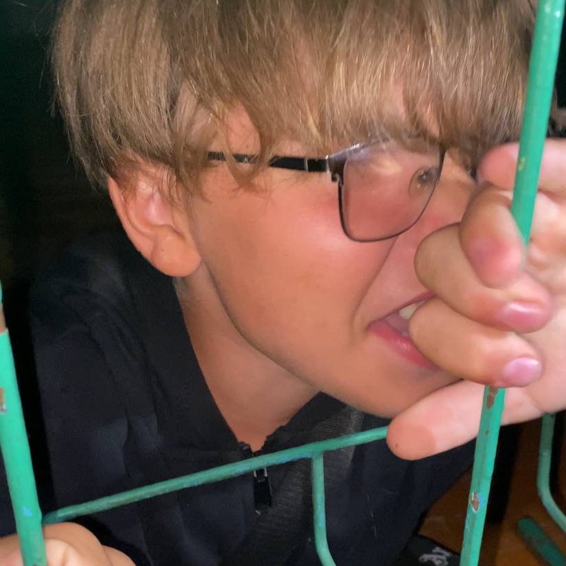

Наш земляк Хазеев Артем Эльвирович стал свободным человеком после того как он стал не зависим от радитилей в 12 лет "что хочу то творю"
Напомним, что Артём стал Независимый от радоков и он может позволять себе всё что угодно.
Артем не только стал не независим от радоков но и дает тепло лесным жителям ❤
Артём не смог контролировать пламя, и пришлось тушить лес, но зато звери успели согреться
Артём начал публично унижать нашего популярного "Огурчика"
Но всё хорошо обошлось когда наш Участковый Грека поймал Артёма и Греке дали повыху смотрите какой он давольный а не то что Артём.
Участковый Грека не сообщил на сколько посадили Артёма в КПЗ
